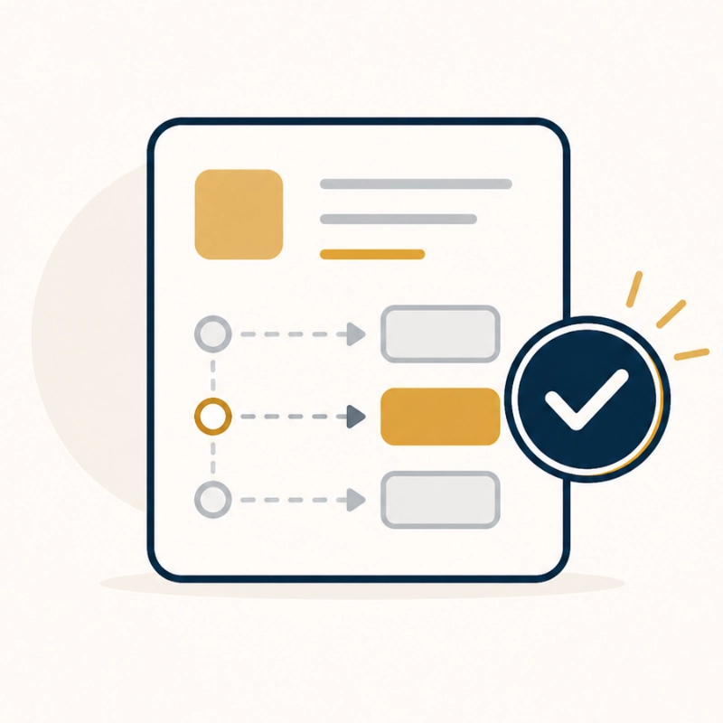
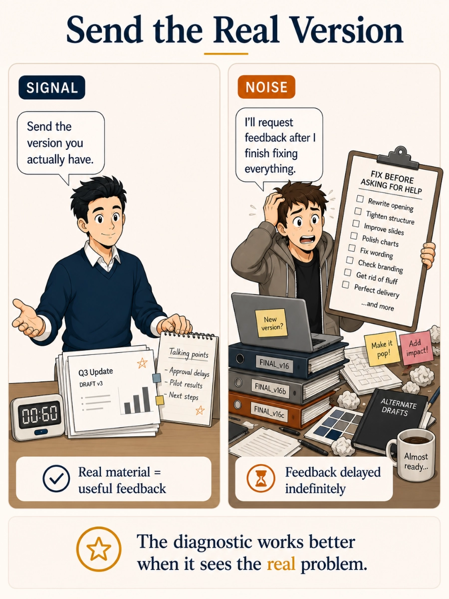

01 / Request
Send what you have.
Share your deck, script, speaking notes, or short practice video. It does not need to be polished.
So we can review the real material, not a hypothetical version.
Process
You do not need to know exactly what kind of help you need. Send the current version of your presentation, add a little context, and we'll show you what to improve first. If you already know you want paid support, you can go straight to the paid support request.
01 / Request
Share your deck, script, speaking notes, or short practice video. It does not need to be polished.
So we can review the real material, not a hypothetical version.
02 / Context
Add the audience, goal, format, deadline, and anything you're worried about.
So we can review the work against the real situation.
03 / Review
We check the message, structure, slide logic, audience fit, and delivery risks.
So you get specific feedback, not vague advice.
04 / Recommendation

We tell you what to improve first and whether the right next step is individual support, a focused sprint, ongoing coaching, a team workshop, or a partner class.
So you know what to do next.
Diagnostic Mindset

What you can send
The diagnostic works best when we can see the real material you're working with. Send whichever format shows the problem most clearly.
Useful when the message, structure, opening, closing, or emphasis needs work.
Useful when the deck feels crowded, unclear, too text-heavy, or hard to follow.
Useful when timing, confidence, pacing, presence, or rehearsal quality is the main concern.
Next Step
The diagnostic identifies the real issue first, then routes you to the smallest useful next step: individual support, a focused sprint, ongoing coaching, a team workshop, or a partner class when that is the better fit. Paid-ready visitors can skip the diagnostic and share the project context on the paid support page.
You may only need a targeted diagnostic when the core idea is already strong and the main problem is clarity, structure, slide cleanup, or rehearsal focus.
A larger engagement makes sense when the presentation is high-stakes, unclear, politically sensitive, or still changing.
Next Step
Submit the request, and we'll review the materials and presentation context before replying with the best next step.
Get 3-5 specific fixes for your deck, script, or delivery.